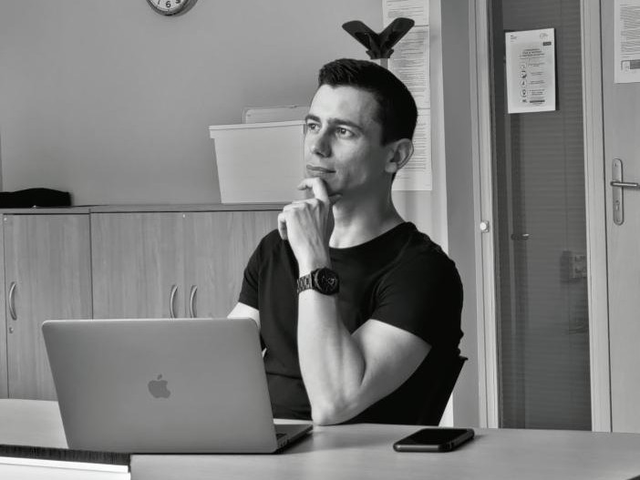
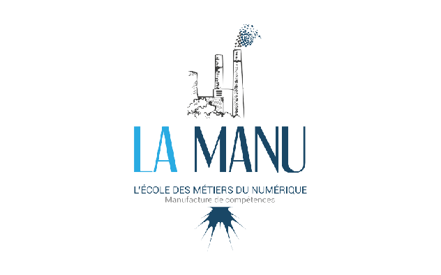

Je m'appelle Julien TANGUY, je suis né le 24/05/1990 et je vis à Soissons.
Passionné depuis toujours par le domaine de l’informatique et du développement. Après 8 ans en tant que brancardier, J’ai entrepris début 2020 une reconversion professionnelle dans le but de devenir développeur web.
Mes différentes expériences professionnelles m’ont appris à travailler en équipe ou en autonomie. Je suis quelqu’un de rigoureux et trés motivé dans mon travail.
Lors de ma formation à LA MANU, j’ai suivi un programme intensif qui à exigé une forte mobilisation. J’y ai appris à toujours m’investir pour rendre un travail soigné et de qualité. J’y ai également appris à être autodidacte afin de résoudre le plus efficacement possible les problèmes rencontrés sur mes diverses projets professionnels. Je suis passionné par les nouvelles technologies, le sport et la moto.
Au cours de ma formation développeur web à l’école LA MANU de Noyon, j’ai appris à créer une application web et web mobile de manière responsive et sécurisée. Je possède des compétences en Html et Css. J’ai une bonne connaissance du framework Bootstrap et suis en mesure de l’exploiter pour rendre un projet responsive sans diminuer l'expérience utilisateur.
J’ai les compétences nécessaires pour réaliser toutes les étapes d’un CRUD a l’aide de Php et Mysql.
J’accorde lors de ces projets, une grande importance à la sécurité de mes formulaires et suis toujours à l’écoute des conseils pour les optimiser et prévenir les failles de sécurité. Je suis également capable de réaliser des projets WordPress et de concevoir des interfaces utilisateurs dynamiques grace à Javascript
À la fin de ma formation, j'ai été diplomé du titre RNCP - 31114 (niveau 5) développeur web et web mobile.
TITRE RNCP 31114 BAC+2, Niveau 5 Développement web et web mobile.
LA MANU - NOYON
2020
BAC professionnel Logistique.
LYCÉE SAINT VINCENT DE PAUL - SOISSONS
2008 - 2009
BEP Logistique et commercialisation.
LYCÉE SAINT VINCENT DE PAUL - SOISSONS
2006 - 2007
Développeur web
Réalisation de plusieurs projets personnels dans le but d'aquérir des compétences.
depuis novembre 2020
Brancardier Centre hospitalier de Soissons
Accompagnement et manipulation des patients au cours de leurs examens médicaux. Transmission des informations concernant les patients et leurs interventions.
depuis 2012
Intérimaire Différentes entreprises
Réception des livraisons. Préparation des commandes. Contrôle de la qualité des produits réceptionnés.
2009 - 2012